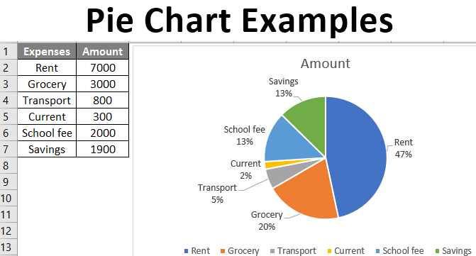

The Black Goose Bistro offers casual lunch and
dinner fare in a relaxed atmosphere. The menu
changes regularly to highlight the freshest local
ingredients.
Catering
You have fun. We'll handle the cooking. Black
Goose Catering can handle events from snacks for a
meetup to elegant corporate fundraisers.
Location and Hours
Seekonk, Massachusetts;
Monday through Thursday 11am to 9pm; Friday and
Saturday, 11am to midnight
Serif Typefaces
Serif typefaces have small slabs at the ends of letter strokes.
In general, serif fonts can make large amounts of text easier to
read.
Unordered list
Serif
Sans-serif
Script
Display
Dingbats
Ordered list
Gutenberg develops moveable type (1450s)
Linotype is introduced (1890s)
Photocomposition catches on (1950s)
Type goes digital (1980s)
Description list
Linotype
Line-casting allowed type to be selected, used, then recirculated
into the machine automatically. This advance increased the speed of
typesetting and printing dramatically.
Photocomposition
Typefaces are stored on film then projected onto photo-sensitive
paper. Lenses adjust the size of the type.
Digital type
Digital typefaces store the outline of the font shape in a
format such as Postscript. The outline may be scaled to any size for
output.
Postscript emerged as a standard due to its support of
graphics and its early support on the Macintosh computer and Apple
laser printer.
Renowned type designer, Matthew Carter, has this to say about his
profession:
Our alphabet hasn't changed in eons; there isn't much latitude in
what a designer can do with the individual letters.
Much like a piece of classical music, the score is written
down. It's not something that is tampered with, and yet, each
conductor interprets that score differently. There is tension in
the interpretation.
This is an example of
text
with a lot of
curious
whitespace.
This is an example of
text
with a lot of
curious
whitespace.
Chart showing expenses.

Web Typography
Back in 1997, there were competing font formats and tools for
making them…
We now have a number of methods for using beautiful fonts on web
pages…